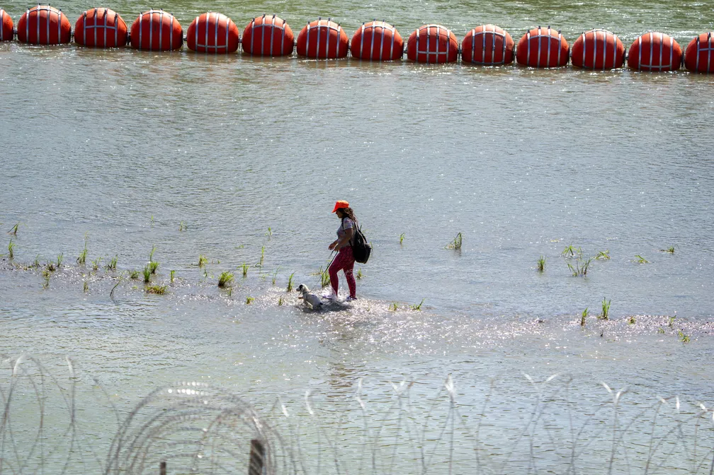

Site de Noticias
NewsInsight

Tribunal federal dos EUA ordena que Texas remova barreira de boias contra imigrantes
Antes do G20, Modi pede que países ricos financiem combate à mudança climática
A rede de tráfico humano que promete emprego a cubanos e os leva para lutar pela Rússia na Ucrânia
Justiça do México descriminaliza aborto: o que acontece agora?

Homem é preso nos EUA ao tentar cruzar o Atlântico em 'roda de hamster'
Tribunal federal dos EUA ordena que Texas remova barreira de boias contra imigrantes
Barreira de boias instalada em julho no Rio Grande visa impedir entrada de imigrantes em território americano. Em agosto, o México informou ter encontrado dois corpos na área. Governador republicano diz que recorrerá da decisão.
Antes do G20, Modi pede que países ricos financiem combate à mudança climática
A nível global, as nações com economias mais desenvolvidas ainda não cumpriram a sua promessa de fornecer aos países pobres 100 bilhões de dólares por ano em financiamento climático.
A rede de tráfico humano que promete emprego a cubanos e os leva para lutar pela Rússia na Ucrânia
O governo de Cuba denunciou uma rede dedicada ao tráfico de cubanos para enviá-los para a frente de batalha na Rússia.
Justiça do México descriminaliza aborto: o que acontece agora?
Suprema Corte mexicana decidiu nesta quarta-feira que proibição ao aborto no Código Penal é inconstitucional